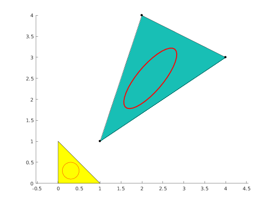

Contents
Illustrate reading file into Mesh object.
clear variables;
Access test data file.
The call below uses data file stored in tests/data folder. Because we want to use test data files we have to initialize tests in order to be able to find the files.
mp_test_initialize(); % Open test data file for reading a mesh. fhandle = mp_test_data_fopen('single_triangle.msh'); mesh = mp.readMesh(fhandle);
Visualize mesh
Use Viewer object.
viewer = mp.Viewer(); viewer.show(mesh); hold on info = mp_gmsh_types_info(mesh.cellTypes()) nodes = info.nodes fill(nodes(:,1), nodes(:,2), 'yellow'); t = linspace(0, 2*pi, 36); cx = 0.3; cy = 0.3; R = 0.2; refPts = [R*cos(t)'+cx,R*sin(t)'+cy, 0*t']; realPts = zeros(36,3); for i=1:36 realPts(i,:) = mesh.geomTrans.transform(refPts(i, :), 1); end line(realPts(:,1), realPts(:,2), 'LineWidth', 2, 'Color', 'red') line(refPts(:,1), refPts(:,2), 'Color', 'red') % Report demo status mp_manage_demos('report', 'mp_map_circle', true);
info =
struct with fields:
type: 2
nnodes: 3
dim: 2
shape: 'triangle'
description: '3-node triangle'
faces: {[1 2 3]}
edges: {[1 2] [2 3] [3 1]}
nodes: [3×3 double]
nodes =
0 0 0
1 0 0
0 1 0
